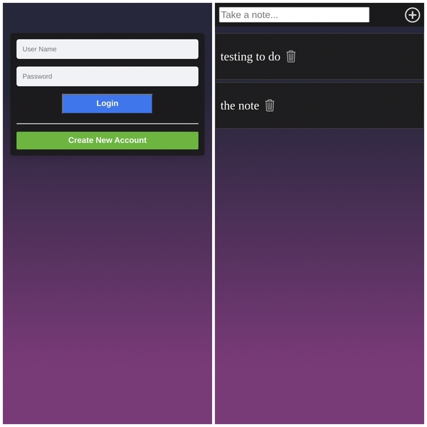
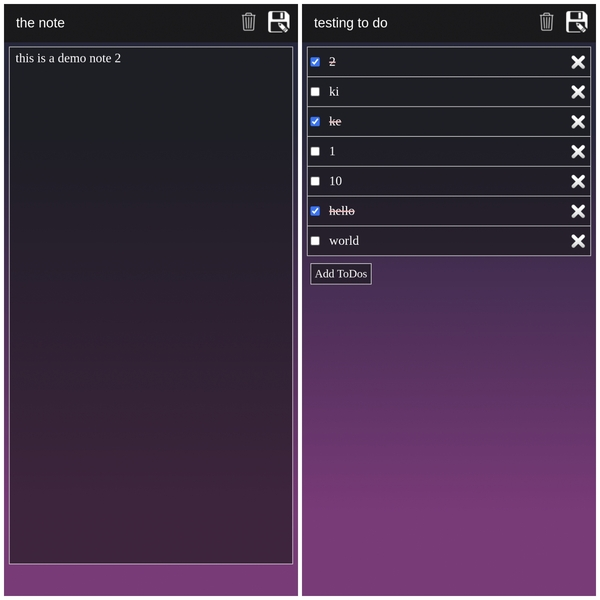

About Me

I'm a computer geek and a beginner programmer.
Other than programming I use to spend time in gaming,
listening songs and graphics designing.
My Logo

Our logo is combination of A and S, where :-
A for Adarsh
S for Suman
First time made this logo in class 5th during my Drawing class, after 1 year(in class 6th)
i made this logo on pc with Ms paint, Ms PowerPoint.
The Notes App

This is Multi-User Notes app.
Which allows multiple login and New user can also create their New account to login.
Each user can store their notes and To-Do separately to others and securely

This Notes app facilitate Both Notes type and To-dos type with all your basic features.
Notes type provide you a unlimited space for your notes with self extended input box.
To-dos Type Come with is Done CheckBox which help you to remember you works.